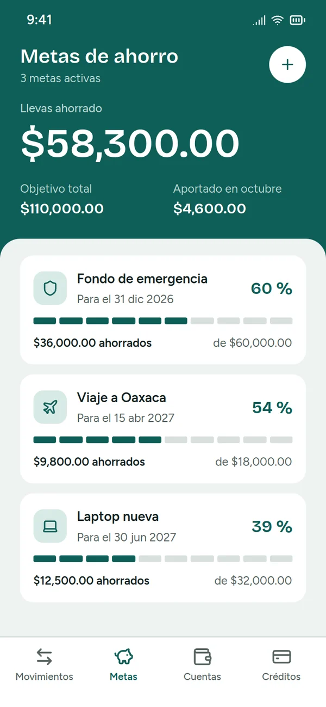
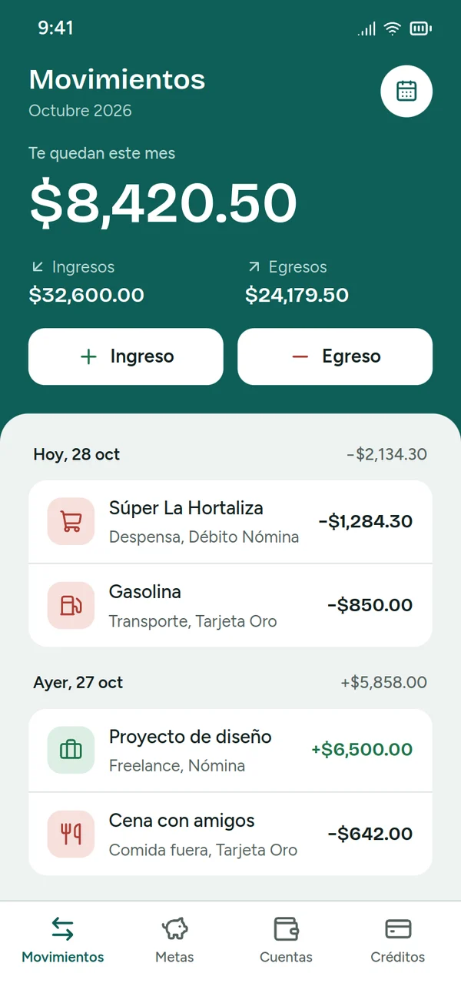
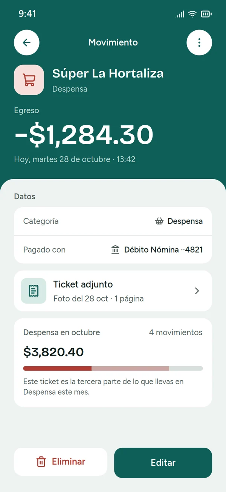
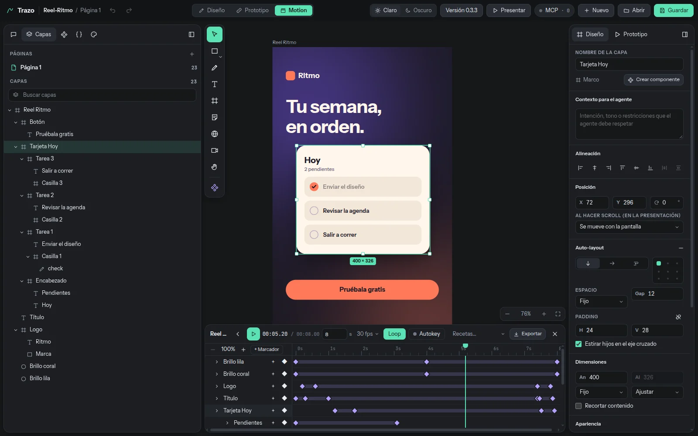
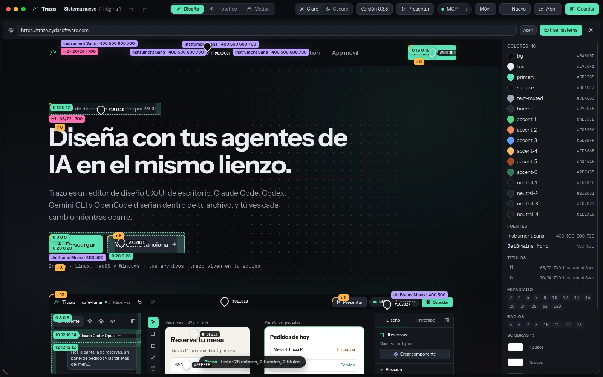

Editor de diseño local · agentes por MCP
Diseña con tus agentes de IA en el mismo lienzo.
Trazo es un editor de diseño UX/UI de escritorio. Claude Code, Codex, Gemini CLI y OpenCode diseñan dentro de tu archivo, y tú ves cada cambio mientras ocurre.
Agente
Agente
Claude Code · Opus
Haz la pantalla de reservas, un panel de pedidos y las tarjetas del menú.
Claude Code · líder
Reparto en 3 zonas: Reservas para mí, el panel para Codex y las tarjetas para Gemini CLI.
split_work
apply_operations
render_image
Codex · Panel de pedidos: render e inspección, 0 problemas
Gemini CLI · armando las tarjetas del menú…
@ Reservas
Diseña lo que sea…
Reservas 390 × 844
Reserva tu mesa
Jueves 14 de noviembre · 2 personas
13:30
Terraza
14:00
Salón
14:30
Barra
Panel de pedidos
Pedidos de hoy
Mesa 4 · Lucía R.
En cocina
Mesa 7 · Andrés P.
Servido
Codex
Tarjetas de menú
Flat white
Claude Code · líder
Gemini CLI
78%
Cómo funciona
Tres pasos y tu agente ya está diseñando.
01
Abre un archivo .trazo
Crea uno nuevo o abre uno que ya tengas. El archivo vive en tu equipo, no en un servidor.
02
Conecta tu agente
Claude Code, Codex, Gemini CLI u OpenCode entran a tu archivo por MCP, desde tu terminal.
03
Pide y mira cómo trabaja
Diseña en el lienzo, te pide permiso en lugar de negarse y revisa su trabajo con render e inspección automática.
Y un editor completo para ti
Auto-layout
Componentes, instancias y variantes
Variables con modo claro y oscuro
Pluma con curvas Bézier
Skills de diseño para los agentes
Varios agentes a la vez
Un líder reparte. Los ayudantes diseñan en paralelo.
Cada agente tiene cursor, nombre y color propios, así que siempre sabes quién está haciendo qué. El líder divide el trabajo en zonas y cada ayudante diseña la suya.
Piden permiso en lugar de negarse. Tú decides.
Revisan su propio trabajo con render e inspección automática.
Cada cambio queda en tu historial, firmado por el agente que lo hizo.
Zona A · Reservas
Zona B · Panel de pedidos
Zona C · Tarjetas de menú
14:02:11
Claude Code repartió 3 zonas
14:03:40
Codex terminó el panel de pedidos y lo revisó
14:04:05
Gemini CLI pidió permiso para leer DESIGN.md
HTML+CSS
Tailwind
React
Vue
kit: shadcn/ui
import { Button } from "@/components/ui/button"
export function Reservas() {
return (
<main className="flex flex-col gap-3 p-4">
<h1 className="text-xl font-bold">Reserva tu mesa</h1>
<Horario hora="14:00" lugar="Salón" />
<Button className="w-full">Reservar 14:00</Button>
</main>
)
}
Del lienzo al código
Lo que diseñas sale en el formato que usas.
Exporta imágenes, documentos y presentaciones, o genera código como punto de partida con los componentes de tu kit.
Archivos
PNG · JPG · WEBP · SVG · PDF · PPTX · HTML
Código
HTML+CSS · Tailwind · React · Vue
Kits
Tailwind · shadcn/ui · daisyUI · Bootstrap · Bulma
Prototipo
Tus pantallas ya navegan.
Conecta un botón, una pestaña o una fila con otra pantalla y dale «Presentar»: se usa como la app. Esta es una app de finanzas diseñada por un agente en Trazo, con sus pantallas conectadas.



- Arrastra el conectorSelecciona una capa y lleva su conector hasta la pantalla a la que va. Elige disolver, deslizar o empujar.
- O que lo haga tu agenteAl terminar un flujo, el agente conecta pestañas, botones, filas, atrás y cerrar.
- PreséntaloEn un marco de teléfono, tablet o navegador; en tu celular, a pantalla completa con la app de Trazo.
Motion
Tu diseño también se mueve.
Anima tus pantallas y piezas con keyframes en una línea de tiempo, o pídeselo a tu agente. Este reel se diseñó y se animó en Trazo, y el video es el MP4 tal como lo exportó.

- Keyframes y recetasGraba cambios con autokey, ajusta la curva o aplica una receta de entrada en un clic. Las copias vivas repiten la animación sin rehacerla.
- Video, audio y subtítulosPon un video como capa o relleno. Trazo lo transcribe en tu equipo y te da subtítulos en varios idiomas.
- Exporta sin esperarTu archivo sigue abierto mientras se exporta, con cada cuadro exacto y el audio incluido.MP4 · GIF · PNG
Sistemas de diseño
Tu marca, en cada pantalla.
Guarda tu sistema de diseño una vez y todo archivo nuevo empieza con él: colores, tipografía, componentes y una guía que los agentes siguen. Sácalo de tu web, impórtalo de Claude Design o llévalo a tu código.

- Desde tu webAbre tu sitio en el navegador de Trazo y dale «Extraer sistema». Marca sobre la página cada fuente, título, color y espaciado que toma, y arma el sistema.
- Desde Claude DesignImporta el sistema que ya hiciste ahí: colores en claro y oscuro, escala de texto, espaciados y la guía de cada componente.
- Se respetaLa revisión marca cualquier color, fuente o tamaño que no sea del sistema, y los agentes lo corrigen antes de terminar.
- En tu códigoInstálalo en tu repositorio: la guía y los tokens en CSS y JSON, con una nota para que Claude Code y Codex lo usen al programar.
Prototipo y app móvil
Pruébalo como se va a usar. Sigue a tus agentes desde el teléfono.
Teléfono
Tablet
Prototipo y presentación
Conecta pantallas con interacciones y preséntalas dentro de un marco de teléfono, tablet o navegador.
cafe-lunar.trazo
Codex: panel listo. ¿Agrego el estado vacío?
Sí, y uno de error.
Escribe a tus agentes
Escritorio
Tailscale
Teléfono
App móvil espejo
Mira el lienzo y habla con tus agentes desde el teléfono. Se conecta con tu escritorio por Tailscale.
Descargar para Android (.apk)Agentes compatibles
Trae el agente que ya usas.
Corren en tu equipo y se conectan a Trazo por MCP. Puedes usar uno o varios en el mismo archivo.
Claude Code
CLI · MCP
Codex
CLI · MCP
Gemini CLI
CLI · MCP
OpenCode
CLI · MCP